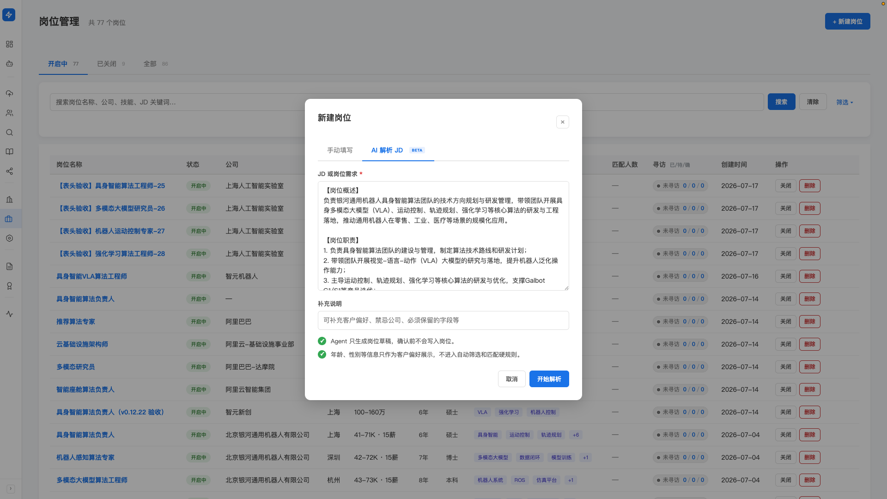
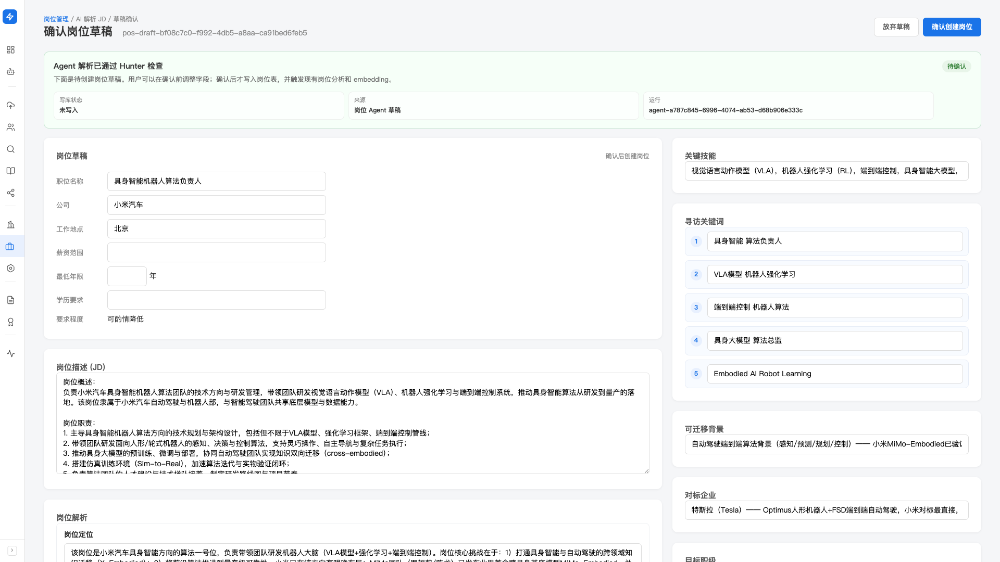
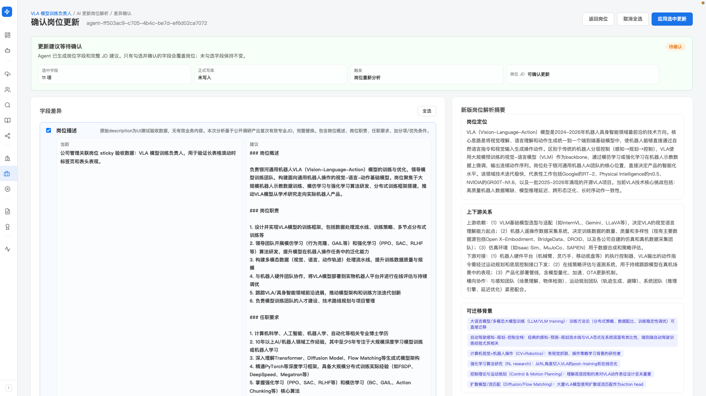

岗位 Agent
接到一个陌生岗位，先别急着一个字一个字读 JD。 把 完整 JD，或客户几句口述式的需求 丢给 Hunter， AI 会替你上网查资料、看懂这岗位到底做什么、上下游是谁、哪些相邻背景能迁移， 再拆出关键要求、对标企业和一组寻访关键词， 最后生成一份可编辑的岗位草稿。你确认后它才写入岗位， 并顺手把关键词种给寻访、把解析喂给匹配。
产品里对应左侧导航「岗位（需求）」分组下的「岗位管理」。 新建岗位时在弹窗里切到「AI 解析 JD」标签即可用； 对已有岗位，则在岗位详情页右侧的「AI 岗位解析」卡片上发起。
岗位 Agent 目前处于 Beta 阶段，解析质量还在持续打磨中—— 对小众或全新方向的岗位，偶尔会漏掉或猜错一些内容。 但它的产出都只是「草稿」和「建议」，确认前绝不会写进你的岗位， 你可以逐字段改、逐条挑，放心试用。用下来有问题或建议，欢迎随时反馈给我们。
它到底替你做了什么
你给一段 JD 或几句需求，Agent 会先上网查公开资料把岗位研究一遍， 再产出下面这些内容（都进草稿，等你确认）：
- 基础字段：职位名称、公司、工作地点、薪资范围、最低年限、学历要求。 原文没写、公开资料也查不到的，它会留空，而不是硬编一个。
- 一份专业 JD：如果你给的只是几句口述需求，它会补成一份结构完整的岗位描述 （岗位概述、岗位职责、任职要求、加分项）。
- 岗位解析：这是最值钱的部分——岗位定位、上下游关系、可迁移背景、 对标企业、目标职级、文化 / 团队偏好、薪酬构成、到岗时间， 以及用大白话写的「软性和隐性要求」（这岗位真正难在哪、要什么样的人）。
- 寻访关键词：最多 5 组，每组最多 2 个词， 直接就是拿去招聘平台搜索用的。确认后会成为这个岗位自动寻访的初始关键词。
- 需要确认 / 补充条件：资料不足、拿不准的地方，它会明确列出来提醒你核实， 而不是含糊带过。
如果 JD 或客户要求里提到年龄、性别这类偏好，Agent 会把它作为 补充条件 / 提醒展示给你参考， 不会把它写成自动筛选或人岗匹配的硬门槛。 要不要按这些偏好取舍，由你自己判断。
和「匹配」「寻访」是什么关系
三件事分工很清楚，岗位 Agent 是最前面那一步：
- 岗位 Agent（本篇） = 看懂并配置这个岗位。 把岗位分析清楚，产出解析和关键词，是后面两件事的「弹药」。
- 岗位智能匹配 = 在你自己库里找人。 用岗位（包括这份解析）去跑候选人库，给出匹配分和优势 / 风险。见 岗位智能匹配。
- 自动寻访 = 上招聘平台找新人。 用关键词和筛选条件去平台捞人进待审池。岗位 Agent 生成的关键词， 正是寻访第一次配置时的初始关键词。见 自动寻访。
拿到新岗位，先用岗位 Agent 解析一遍， 确认后岗位信息更完整、还带上了关键词—— 这时候再去「开始匹配」或「寻访配置」，效果会明显更好。
用法一：新建岗位时让 AI 解析 JD
适合手头拿到一个新岗位、还没建进 Hunter 的情况。
-
打开新建弹窗，切到 AI 标签
在「岗位管理」页点右上角「+ 新建岗位」， 弹窗顶部有两个标签：默认是「手动填写」，点右边的 「AI 解析 JD」（带 Beta 标）切过去。
-
粘 JD 或写几句需求
在「JD 或岗位需求」里，粘贴客户给的完整 JD， 或者几句口述式的岗位需求（岗位方向、核心技能、目标背景、年限、地点、薪资、禁忌公司等都行）。 下面的「补充说明」可选，用来补客户偏好、禁忌公司、必须保留的字段等。
-
点「开始解析」
提交后进入 Agent 运行页，你可以离开去做别的。弹窗里也写明了两条底线： Agent 只生成草稿、确认前不写入岗位； 年龄性别只作偏好展示、不进筛选和匹配硬规则。
-
到「确认岗位草稿」页逐字段过一遍
解析完成后进入草稿确认页。左边是基础字段、JD 和岗位解析， 右边是关键技能、寻访关键词、可迁移背景、对标企业、目标职级、禁忌注意事项， 以及一块「需要确认」列出 AI 拿不准的点。 每个字段都能直接改，改到你满意为止。
-
点「确认创建岗位」
右上角点「确认创建岗位」，弹窗再确认一次。 确认后 Hunter 才正式创建这个岗位，并自动触发一次岗位分析， 为后面的匹配做好准备。不想要就点「放弃草稿」，什么都不会写入。


草稿页顶部有个状态条：解析中（还在跑，页面会自动刷新）· 待确认（可以改、可以确认创建）· 失败（会给出原因，回岗位管理重新发起即可）。 只有「待确认」状态下才能编辑和确认创建。
用法二：对已有岗位重新解析
岗位已经在库里了，但信息不全、或客户改了要求——用这个。 入口在岗位详情页右侧的「AI 岗位解析」卡片。
-
点「重新解析」
在「AI 岗位解析」卡片上点「重新解析」，弹出输入框。
-
决定要不要连 JD 一起更新
弹窗里有个「同时更新岗位 JD」开关：
- 关着（默认）：Agent 基于当前岗位资料重新解析， 不动你现有的 JD，只更新岗位解析、关键词等其他字段。
- 打开：需要你填「新版 JD 或补充说明」， Agent 会连完整 JD 建议一起给出来。
另有一个可选的「补充说明」，用来指定这次想重点更新什么、哪些字段必须保留。
-
点「开始解析」，等它跑完
同样进入后台运行，弹窗里也标明：只生成待确认差异，确认前不会覆盖当前岗位。
-
到「确认岗位更新」页逐条勾选
这次是差异对比视图：每一行一个字段，左边「当前」、右边「建议」， 还附上 AI 的改动理由。你逐条勾选想采纳哪些—— 顶部有「全选 / 取消全选」，右侧是「新版岗位解析摘要」和「需要确认」。
-
点「应用选中更新」
只有勾选的字段才会覆盖岗位，没勾的保持原样。 保存后会触发一次岗位重新分析；如果这个岗位之前跑过匹配， 匹配卡片会提示你可能需要重新匹配（因为岗位口径变了）。

勾选采纳某个字段，意味着用「建议」覆盖掉「当前」的值。 所以对拿不准的字段，先看清楚「当前 / 建议」两栏再勾。 不想动的字段不要勾，它就原封不动。
寻访关键词：种下去、还能自己改
岗位 Agent 生成的寻访关键词（最多 5 组、每组最多 2 个词）确认后， 会成为这个岗位第一次配置自动寻访时的初始关键词—— 省得你从零想搜索词。到了寻访配置页，这些词还可以再调。
另外，在岗位详情页进入「编辑」模式后， 「岗位解析」里的「寻访关键词」也能直接手动增删改： 点「+ 添加一组」加一组、每组填不超过两个词、点行尾「×」删一组，上限 5 组。 不想跑一次 AI 也能手工维护这份关键词。
关键词每组最多两个词，是因为招聘平台搜索词太多会把结果搜没。 5 组关键词相当于 5 种不同的切法（比如按核心技能、按相邻岗位名、按对标方向）， 覆盖面比单一组词广得多。第一次觉得不够，回岗位编辑或寻访配置里补几组。
哪里能看到解析结果
- 岗位详情页 →「岗位解析」卡片：确认后，岗位定位、上下游、可迁移方向、 对标企业、目标职级、文化偏好、软性和隐性要求、寻访关键词都在这里，随时可看、可编辑。
- 岗位详情页 →「AI 岗位解析」卡片：显示当前状态 （未解析 / 解析中 / 建议待确认 / 已写入 / 解析失败）、待确认项数、最近解析时间， 以及「查看运行」「查看并确认」「重新解析」入口。
- Agent 运行中心：每次解析都是一次 Agent 运行， 过程和结果可以在这里回看。见 Agent 运行中心。
最佳实践
很多时候客户只给你几句话（「要个能带团队、做过大模型落地的，最好来自大厂」）。 这种口述式需求直接丢进去也行——Agent 会先认出里面的明确事实， 再靠公开资料补出完整岗位方向、职责结构和可迁移背景，最后给你一份专业 JD。
确认前，优先扫一眼「需要确认」里列的点—— 那是 Agent 主动标出来「我拿不准、你核一下」的地方（比如薪资、到岗时间没有依据）。 把这些补实，草稿质量立刻上一个台阶。
岗位要求变了，与其自己一个个改字段，不如把新要求写进「重新解析」的补充说明， 让 Agent 生成一份差异建议，你逐条勾选采纳。 改动清清楚楚，也不容易漏。
常见提示
草稿页 / 卡片会显示「解析失败」并给出原因。 这通常是临时问题，回到岗位管理（新建）或岗位详情页（重新解析）重新发起一次即可， 不会留下任何脏数据。
这是刻意的——原文没提、公开资料也确认不了的事实（薪资、到岗时间、学历、年限等）， Agent 宁可留空也不硬编，并把它放进「需要确认」提醒你。你手动补上即可。
每组关键词最多两个词、最多 5 组。 填超了会提示你「每组最多填写两个词」——把长词拆成两组，或删掉多余的词即可。
岗位 Agent 会上网查资料、做交叉判断，但公开信息本身可能过时或有营销水分。 它给的是一份「已经帮你做了大量功课」的草稿，最终判断仍在你手里—— 尤其是薪资、禁忌公司、隐性要求这类关键项，确认前务必自己再核一遍。